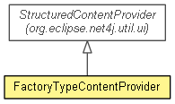

org.eclipse.net4j.ui
Class FactoryTypeContentProvider
java.lang.Object
 org.eclipse.jface.viewers.ViewerComparator
org.eclipse.jface.viewers.ViewerSorter
org.eclipse.net4j.util.ui.StructuredContentProvider<IManagedContainer>
org.eclipse.net4j.util.ui.FactoryTypeContentProvider
org.eclipse.net4j.ui.FactoryTypeContentProvider
org.eclipse.jface.viewers.ViewerComparator
org.eclipse.jface.viewers.ViewerSorter
org.eclipse.net4j.util.ui.StructuredContentProvider<IManagedContainer>
org.eclipse.net4j.util.ui.FactoryTypeContentProvider
org.eclipse.net4j.ui.FactoryTypeContentProvider
- All Implemented Interfaces:
- EventListener, IContentProvider, IStructuredContentProvider, IListener
Deprecated. As of 4.1 use FactoryTypeContentProvider
@Deprecated
public class FactoryTypeContentProvider
- extends FactoryTypeContentProvider

A structured content provider that shows the factory
types of the input.
- Since:
- 4.0
| Methods inherited from class org.eclipse.net4j.util.ui.StructuredContentProvider |
dispose, expandElement, getBoldFont, getDisplay, getInput, getItalicFont, getViewer, inputChanged, notifyEvent, refreshElement, refreshSynced, refreshViewer, revealElement, selectElement, updateLabels |
| Methods inherited from class java.lang.Object |
clone, equals, finalize, getClass, hashCode, notify, notifyAll, toString, wait, wait, wait |
FactoryTypeContentProvider
public FactoryTypeContentProvider(String productGroup)
- Deprecated.
Copyright (c) 2011, 2012 Eike Stepper (Berlin, Germany) and others.